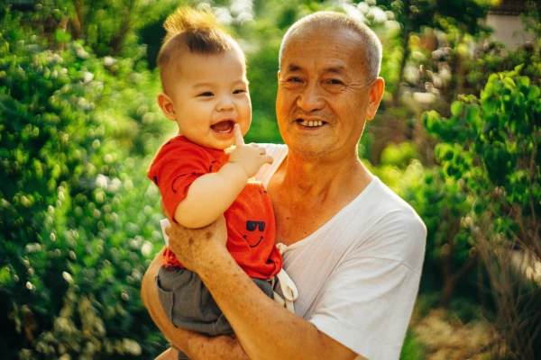

Malaysia is a Southeast Asian country occupying parts of the Malay Peninsula and the island of Borneo. It's known for its beaches, rainforests and mix of Malay, Chinese, Indian and European cultural influences. The capital, Kuala Lumpur, is home to colonial buildings, busy shopping districts such as Bukit Bintang and skyscrapers such as the iconic, 451m-tall Petronas Twin Towers.

Population
The Citizens population increased from 30.0 million in 2021 to 30.2 million in 2022 with the growth rate decreasing from 0.8 per cent to 0.7 per cent over the same period. In 2022, the male population exceeds the female population at 17.0 million and 15.7 million respectively.
China Town
Lively, colorful Chinatown is centered on Petaling Street, known for its fashion shops and a large covered market with produce, clothes and accessories. Local artists sell paintings and crafts at nearby Central Market, where stalls also dish up noodles and curry.
Bukit Bintang
Bukit Bintang is known for Jalan Bukit Bintang, a busy thoroughfare with upscale malls and luxe fashion boutiques. Al fresco bars and live music clubs line Changkat Bukit Bintang street, while Jalan Alor is a lively strip known for sidewalk restaurants serving Chinese fare like clam soup and buttered prawns. Nearby, KL Forest Eco Park has nature trails and an elevated walkway.
Genting Highland
Genting Highlands is an integrated resort development comprising hotels, casinos, shopping malls and the latest Skyworlds Theme Park in Pahang, perched on the peak of Gunung Ulu Kali at 1,800 meters high. On a clear day, the peak overlooks lush valleys of rainforest stretching towards KL, a breathtaking view for visitors as they enjoy the cooling weather and serene mountain environment.
Batu Caves
The magnificent Batu Caves are one of the top tourist attractions in Malaysia. Most tourist has always known the famous 272 steps leading to the entrance of the Sri Subramaniar Swamy Temple in Batu Caves. The colourful new steps are already proving popular with Instagrammers, but the religious site is also a pilgrimage for many Hindus and features a massive golden statue of the god Lord Murugan.